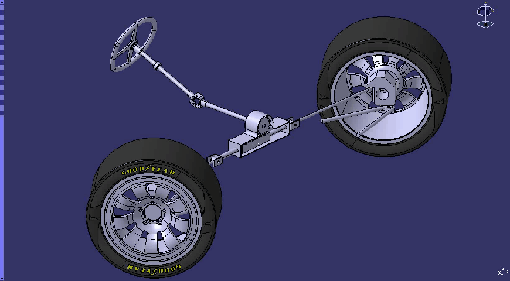
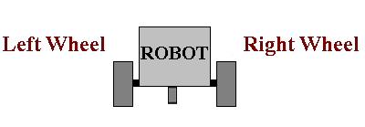
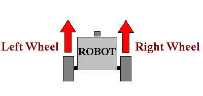
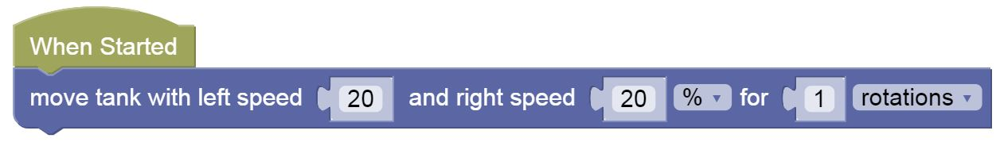
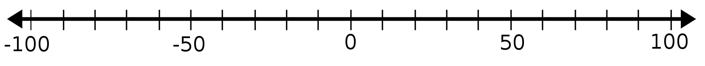
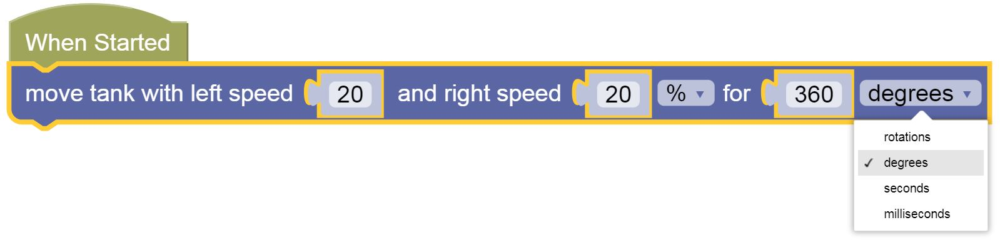
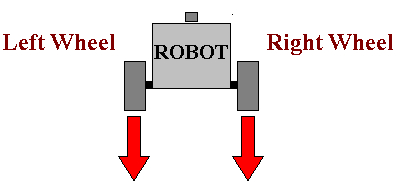
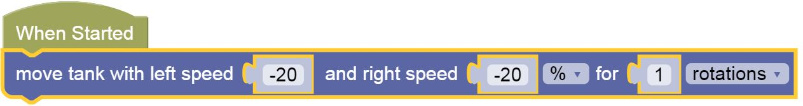

2-Wheel Robots & Move Tank
GearsBot and most robotic platforms don't work like cars:

In cars one engine is usually powering 2 or 4 wheels. The steering is handled via rotating the wheels along a second dimension.
The most common robotic platforms in use today for industrial, commmercial and educational purposes are 2-Wheel Differentiated-Drive robots.
Differentiated Drive means that each wheel is controlled by a different, independent motor.
Here is an example of 2-wheel wharehouse robots:
The Roomba, and various robots deployed to Hawker centers and food courts are all built on similar principles.
The steering is handled by controlling each wheel separately.
Depending on wheel placement, you will also need one or more caster wheels or ball bearings to just balance the rest of the frame, like this:

MOVEMENT BLOCKS
Let's figure out how to make our robot move in the four directions we are used.
Start by loading Gears here.
Forward
To move forward, you need to rotate both tires forward at the same speed:


Speed Numbers -100 to 100

Depending on your level, you may not have covered numbers to 100, or negative numbers, so this is a brief review of the numbers from -100 to 100.
- 100: full speed forward
- 50: half speed forward
- 0: stop
- -50: half speed backwards
- -100: full speed backwards
Tip: We use %20, a relatively low speed, to avoid a jittery movement. You can try max speeds %100 to see the difference.
Practice 1
-
Change the speeds to go slower or faster, but remember to keep them the same speeds on both sides to go forward
-
Use this Gears world
Rotations, Degrees, Seconds, Milliseconds
The last parameter/input in this code block refers to how far or how long you want your robot to go. You can experiment with different options:

For now just use Rotations
Practice 2
-
Change the amount your wheels rotate to make your robot bump into the wall!
-
Use this Gears world
Back
To move back, you need to rotate both tires back at the same speed:


Practice 3
-
Make your robot go backward until it hits the back wall
-
Use this Gears world